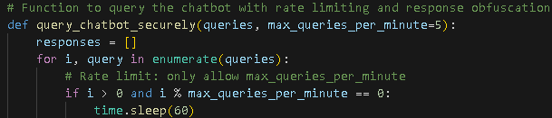

What is Model Theft?
Model theft occurs when an attacker steals the intellectual property of a trained machine learning model. The goal is to replicate the model's functionality or to exploit its knowledge for malicious purposes, often without the original model owner's consent...
Methods of Model Theft
- API Extraction: An attacker can repeatedly query a model via its public API to gather information about its behavior and reconstruct the model.
- Model Inversion: This method involves querying a model with specific inputs to reverse-engineer sensitive data it was trained on.
- Transfer Learning: An attacker might use the learned features from a model in a similar task or model to gain access to proprietary knowledge.
Solution: Protecting Models from Theft
-
API Rate Limiting and Monitoring:
- Impose strict rate limits on API calls to prevent mass querying and model extraction.
- Monitor usage patterns to detect unusual activity or potential attempts at theft.
This snippet shows how rate limiting can be implemented to protect an AI model from excessive querying.
-
Watermarking Models:
- Embed invisible "watermarks" in the model’s outputs that can later be detected to prove ownership in case of theft.
-
Access Control:
- Implement access control mechanisms to ensure that only authorized users can access sensitive models.
- Use role-based access control (RBAC) for finer granularity over who can interact with the model.
-
Model Encryption:
- Encrypt models when deployed to protect them from being downloaded and reverse-engineered.